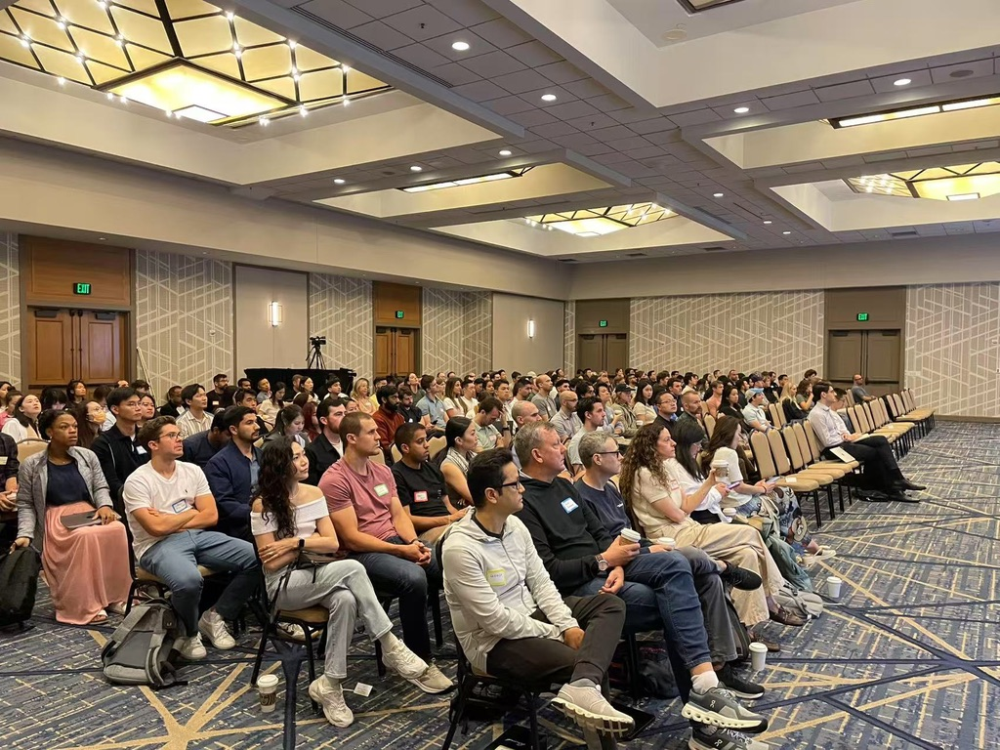
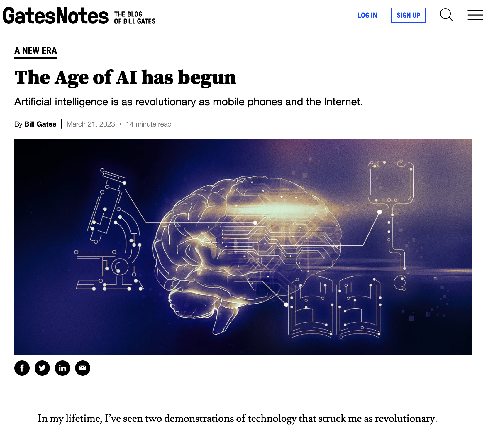
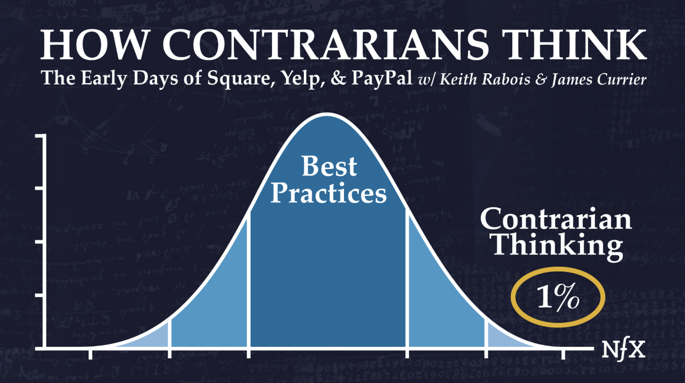

AI Enablement for Investment Research
From chatbot usage to agentic research workflows, context infrastructure, and PM-level judgment systems.
Prepared for Dymon Asia · v11 course briefing
Most AI usage today is constrained by the wrong operating model.
Chatbot mode
AI answers. Human verifies, moves context, executes, and starts over in the next session.
Agentic mode
AI works inside an environment: files, data, browser, code execution, errors, citations, and persistent artifacts.
Research implication
The leverage is not more summaries. It is the ability to convert repeated research judgment into reusable workflows.
Core claim: stop using AI as an answer box; start using it as an interface for building research workflows.
What this session is for
X
The objective is a precise mental model, not AI enthusiasm.
| Question | What the session should resolve |
|---|
| Why does ChatGPT feel impressive but operationally shallow? | The chat window keeps the human in the feedback loop and prevents context and output from compounding. |
| What is different about agentic AI? | It can use tools, inspect intermediate state, debug, retry, and leave reusable assets behind. |
| Why does this matter to portfolio managers? | Investment edge comes from differentiated judgment, not access to more undifferentiated information. |
| What should Dymon build first? | Start with individual PM workflows, then abstract the common infrastructure into a team layer. |
Before the argument starts, the room gives us one live research question.
Ask
Pick a current market, company, theme, or risk that is worth a PM's attention this week.
Kick off
Start ChatGPT Pro + Deep Research and an agentic research workflow in parallel for 10-15 minutes.
Return
Later we inspect what each run produced: evidence, gaps, calculations, artifacts, and decision usefulness.
You should see the difference as work happens: one run returns an answer; the other run tries to build a small research system we can inspect and reuse.
Superlinear teaches AI as a craft of building, not a catalog of tools.
My background sits at the intersection this room cares about: Cornell economics PhD, experimentation and growth data science, former Principal Data Scientist and Evangelist at Statsig, and now Superlinear Academy. The course comes from watching thousands of operators move from impressive demos to durable work systems.
3,000+
paid students across AI Builders cohorts
300K+
AI, data, and builder audience across platforms

Enterprise AI training audience. The emphasis is on operator-level workflow change, not prompt tips.
JPMorgan Chase
Quant Researcher
Built a daily-use application they did not expect to build so easily.
TikTok
Strategy Ops Manager
Valued the frameworks for thinking about building with AI, technical or not.
Oracle
Sr. Principal TPM
Described the course as training both practical skill and builder mindset.
The argument starts with a live question, then moves from paradigm shift to desk-level implementation.
0
Demo kickoff
The room supplies a live research question; two AI workflows start running immediately.
1
Paradigm shift
Natural language is the third interface to compute; chatbot usage misses that shift.
2
Evidence
Cursor and Anthropic show the AI-native curve; Goldman, Shopify, and Block show incumbents and operators beginning to absorb the shift.
3
Investment translation
PM edge is the transformation from information to differentiated judgment and position sizing.
4
Demo debrief
Return to the same question and compare answer quality, workflow discipline, and reusable artifacts.
5
Course architecture
The proposed course carries one real investment task through three upgrades: usable research, reusable context, and periodic workflow.
AI is not primarily a better chatbot. It is a new interface to compute.
That distinction is the foundation for everything that follows.
Bill Gates says he has seen two revolutionary technologies in his lifetime. What was the first?
AI is the second. Before the next slide, take a guess. It was not the internet, mobile, or cloud.
The answer matters because it explains why AI is not just another tool category.

GatesNotes, "The Age of AI has begun", March 2023.
Source: Bill Gates, GatesNotes, "The Age of AI has begun", March 21, 2023.
GUI mattered because it changed who could operate compute.
Before GUI
Computing power was gated by command-line fluency and programming capability. Generality existed, but access was narrow.
After GUI
The mouse, windows, and icons made specific computing tasks accessible to non-programmers.
Now AI gives us the third interface: natural language as a way to operate general-purpose compute.
Natural language fills the missing cell: general-purpose compute with a low starting barrier.
Interface
What it can address
Learning curve
Constraint
GUI
Specific tasks
Easy
Only what the interface designer exposed
Programming
General tasks
Hard
Requires technical fluency
Natural language
General tasks
Easy to start; hard to wield well
Requires context, tools, and verification
This is why "stop using ChatGPT" is not anti-ChatGPT. It is a correction of the interface model.
The missing operating model
X
A new interface does not create productivity if the work remains designed around the old interface.
Red Flag Act analogy: if the human must walk in front of the machine, the machine cannot express its speed.
Electric motor analogy: early factories had to redesign work, not merely replace a power source.
Chatbot workflows often keep the human as the red-flag man: carrying context, running work, and bringing errors back to the model.
ChatGPT usage fails to compound along three operational dimensions.
1. Feedback loop
The model answers. The human executes, observes failure, and manually carries the error back.
2. Context supply
Each conversation depends on the human re-briefing goals, constraints, prior decisions, and quality standards.
3. Asset retention
The output is often a disposable answer, not a reusable file, script, test, checklist, or research skill.
| Result | The human becomes middleware. The system looks intelligent but remains operationally shallow. |
Agentic AI is a closed-loop workflow, not a longer prompt.
01
SpecifyDefine the research question, scope, and success criterion.02
GatherSearch sources, read documents, pull data, and record provenance.03
ExecuteRun code, transformations, screens, or calculations in an environment.04
InspectRead errors, check outputs, validate citations, and identify gaps.05
PersistLeave behind a memo, dataset, script, test, or reusable skill.
The human role shifts from operator to specifier, reviewer, and judge.
AI-native firms show the steep curve. Incumbents show the adoption path.
The point is not to celebrate one success story. The point is to read the pattern: Silicon Valley is redesigning workflows first; traditional firms are now learning how to govern and absorb the same shift.
AI-native signal 1 · Cursor / Anysphere
X
Cursor shows what happens when an AI-native workflow becomes the default operating layer.
| Milestone | Reported ARR / valuation | Why it matters |
|---|
| Jan 2025 | $100M ARR | Reached a scale prior SaaS category leaders took materially longer to achieve. |
| Jun 2025 | $500M ARR; $9.9B valuation | Enterprise and individual developer adoption moved in parallel. |
| Nov 2025 | $1B+ ARR; $29.3B valuation | AI-native workflow products compressed the traditional B2B growth curve. |
| 2026 reports | $2B ARR; $50B talks | The market is pricing workflow capture, not merely seat-based software. |
The strategic signal is not valuation. It is the speed at which an AI workflow can become the everyday environment for a high-value profession.
Sources: TechCrunch, CNBC, The Next Web, SaaStr reporting summarized in the supplied case dossier.
AI-native signal 2 · Anthropic / Claude
X
The strongest AI users have moved past "can AI code?" They are changing what it means to code.
AI now writes large portions of production code
Leaders at Anthropic and OpenAI have publicly described AI writing a very large share of their own code, especially in AI-native teams.
The best users stop treating AI as autocomplete
They specify the task, let the agent work, review the diff, tighten tests, and preserve the learning in the repo or workflow.
The gap is mastery, not model access
Weaker users do not merely use AI as a chatbox. They lack the craft: how to specify, decompose, inspect, test, and iterate with the model.
Senior-engineer-level coding output is no longer locked behind being a senior engineer; it is unlocked by specification, review, iteration, and taste.
This is why the course matters: our strongest students already internalize the method. Jay's own workflow shows why this is accessible even to business people without a coding background; the course architecture makes that path explicit.
Sources: Anthropic Research; The Pragmatic Engineer coverage of Claude Code; Lenny's Podcast interview with the Claude Code team; public commentary from Andrej Karpathy.
Our claim · Verbs, not nouns
X
Real AI mastery is learned as verbs, not nouns.
Noun learning
Model names, tools, features, RAG, MCP, agents, benchmarks. Useful vocabulary, but not yet a craft.
- Can sound current in meetings
- Often becomes tool-chasing
- Does not reliably change output quality
Verb learning
Specify, decompose, delegate, inspect, test, revise, document, reuse. This is where the capability actually lives.
- Turns AI from answer box into worker
- Creates reusable assets and judgment systems
- Transfers across models and tools
Investing is the same. The nouns are factors, sectors, metrics, and frameworks; the edge lives in the verbs: weigh evidence, form a variant view, size risk, monitor catalysts, and revise.
Incumbent signal · Goldman Sachs
X
Goldman is not the whole success story. It is the regulated-incumbent adoption signal.
What we learned
12,000
human developers in Goldman's engineering organization
100s → 1000s
potential scale of Devin agents cited by CIO Marco Argenti
Regulated
a harder operating context than an AI-native startup or software lab
| What we learned | Why it matters to Dymon |
|---|
| Incumbents move slower, but the baseline is changing | When a compliance-bound Wall Street firm pilots autonomous engineers, the question shifts from "is this too early?" to "how do we govern it?" |
| The real enterprise problem is supervision | Access, permissions, review, rollback, provenance, and accountability matter more than the tool name. |
| Research workflows have the same shape | A PM workflow also needs specification, source hierarchy, execution, verification, and persistent artifacts. |
Sources: CNBC, July 11, 2025; Cognition AI corporate blog, September 8, 2025.
What to copy, what not to copy
X
Borrow Silicon Valley's workflow speed and finance's governance discipline.
AI-native companies
Cursor, Claude Code, and similar workflows show what happens when the work is designed around agents from the beginning.
- Workflow first
- Fast feedback loops
- Artifacts become reusable by default
Existing incumbents
Goldman-style adoption shows the second half of the problem: making agentic work safe enough for regulated, high-stakes environments.
- Governance first
- Explicit review paths
- Permissioned access and auditability
For Dymon, the synthesis is not "copy Goldman." It is: redesign the research workflow with AI-native speed, then wrap it in finance-grade source discipline and review.
Industry signal · Shopify
X
Shopify converted AI usage from optional experimentation into an organizational expectation.
CEO mandate
Teams must consider whether their work can be done with AI before asking for incremental headcount or resources.
Performance system
AI proficiency became part of the formal performance expectation, including for leaders.
The management question changes from "who needs more people?" to "what would this team look like if AI teammates were already part of it?"
Sources: TechCrunch and CNBC reporting on Tobi Lutke's March 2025 memo.
Block is trying to replace hierarchy with an intelligence layer.
40% smaller
Block has reportedly cut roughly 40% of its workforce since early 2024. The deeper signal is not headcount; it is organizational redesign.
World model of the company
Dorsey and Botha describe moving from hierarchy as information routing to shared company and customer world models that intelligence tools can read and update.
Edge roles replace middle routing
Managers shift from command chains toward mentors, guides, and domain experts at the edge, while the intelligence layer handles more coordination and context flow.
Get on board. We must act now. The risk is not moving too early; the risk is treating a paradigm shift like a software rollout instead of an operating-model redesign.
Sources: Block, "From Hierarchy to Intelligence", March 31, 2026; Fortune, Axios, and AP reporting on Block workforce reduction.
These are not success stories to copy. They are signals of where the operating curve is bending.
| Signal | What changed | Why it matters to Dymon |
|---|
| Cursor | AI-native workflow becomes the work environment | The biggest gains first appear where the job itself is redesigned around agents. |
| Anthropic / Claude | Frontier-model company measures its own agentic work | Silicon Valley is not just talking about adoption; it is instrumenting workflow change. |
| Goldman | Regulated incumbent begins agent supervision | The slower enterprise path is starting to move from experimentation into governed deployment. |
| Shopify | AI as management baseline | Other industries are beginning to make AI capability part of resource allocation and performance expectations. |
| Block | AI-native reorganization pressure | The most aggressive operators are changing org design, not just tooling. |
The gap will not open at the speed of ordinary enterprise software adoption. It will open at the speed of workflow and organization redesign.
The investment translation: AI must support judgment, not just information retrieval.
For portfolio managers, the bottleneck is rarely access to text. It is transforming noisy information into differentiated, tradeable judgment.
Investment work, mechanically
X
A PM is not paid to know what the market can already know.
Input
InformationFilings, calls, expert inputs, market data, news, positioning, primary data.Filter
SignalWhat matters now, what is stale, what is ignored, what is over-weighted.Model
MechanismWhy the economic outcome should differ from consensus.Decision
JudgmentVariant view, confidence, timing, sizing, and risk.Action
PositionA bet that can be monitored, revised, and exited.
AI that only summarizes information operates at the least scarce part of the chain.
A finance education reflection
X
The common misread of efficient markets is that shared information eliminates edge.
The clean textbook version
If all relevant information is quickly reflected in price, then incremental information alone should not create durable alpha.
The practical version
Market participants may see similar information, but they do not form the same beliefs, scenarios, timing, sizing, or action thresholds.
The edge lives in the transformation layer: information into perspective, perspective into judgment, judgment into a bet.
Best practice is the efficient market. You get paid for being right when consensus is wrong.
The valuable skill is not knowing the center of the distribution. It is knowing when the tail is real.
Naval's useful distinction
A contrarian is not someone who reflexively disagrees. The valuable version is independent reasoning from the ground up, under pressure to conform.
Why this matters to PM work
Deep Research can summarize consensus better than most humans. Useful, but not sufficient.
- Know the best practice and consensus model
- Find the correct contrarian view
- Turn it into a tradeable decision

Contrarian thinking is not random disagreement. It is the disciplined search for the rare case where consensus is wrong.
AI should help you test and sharpen a variant view, not average it back into consensus.
Sources: AI Builders Module 4; NFX, "How Contrarians Think".
Contrarian view is not disagreement for its own sake. It is a structured difference in how evidence is processed.
| Layer | Consensus behavior | PM edge |
|---|
| Source weighting | All credible sources are summarized with similar tone. | Know which source type deserves weight in this situation. |
| Mechanism | Stories are listed as bull and bear points. | Identify the causal mechanism that reprices the asset. |
| Timing | Catalysts are described but not prioritized. | Know what must happen before the market is forced to care. |
| Action standard | The output is balanced and non-committal. | Convert uncertainty into a position, hedge, or decision to pass. |
Naked search is not enough
X
Deep Research gives coverage. Context architecture moves AI up the judgment chain.
Deep Research alone
Comprehensive retrieval, source synthesis, consensus framing, and polished summary.
- Excellent for information coverage
- Often forms a comprehensive consensus view
- Weak on filtering, mechanism, decision, and action
Context-aware research AI
Research executed inside your operating system of judgment: source hierarchy, variant lens, mechanisms, failure modes, and action standards.
- Filters what matters now
- Tests the correct contrarian view
- Connects evidence to tradeable decisions
Your context architecture is the competitive edge: it lets AI help with the scarce parts of the chain, not just summarize the least scarce part.
For a PM, context is not a document library. It is the operating system of judgment.
| Context layer | What it contains | What it changes in output |
|---|
| Source hierarchy | Which evidence types carry weight by market, sector, and situation. | Prevents all sources from being flattened into equal prose. |
| World model | How industry mechanisms, macro drivers, competition, and policy connect. | Moves from listing facts to causal reasoning. |
| Variant lens | What consensus tends to miss or over-discount in a coverage area. | Forces a view instead of a balanced summary. |
| Action standard | What makes an insight tradeable: catalyst, timing, sizing, risk, monitor. | Connects research output to decision quality. |
A top-down knowledge base is usually the wrong first wedge for PM workflows.
Top-down first
Collect documents, build a universal repository, and hope PMs change how they work.
- High integration cost
- Weak connection to desk behavior
- Easy to become a document dump
Individual first
Start with one high-value weekly workflow, encode the PM's actual judgment pattern, then abstract the reusable pieces.
- Fast proof of value
- Closer to how alpha is formed
- Shared layer emerges from useful work
Personal context becomes team infrastructure only after it proves useful in live work.
01
PM context fileCoverage, source hierarchy, memo style, decision standards.02
Workflow skillPre-earnings, hypothesis check, morning brief, post-event review.03
Reusable assetsScripts, templates, checklists, datasets, diagnostics, prompts.04
Pod defaultsShared quality checks and common failure-mode protections.05
Team layerKnowledge base shaped by work that has already created value.
Now we come back to the research question that has been running in the background.
The comparison is not a magic trick. It is a way to inspect what each operating model produces after the same 10-15 minute head start.
The demo starts at the beginning; this section inspects the evidence it produced.
Run A: ChatGPT Pro + Deep Research
Ask the strongest off-the-shelf research assistant for a comprehensive answer.
- Measures retrieval and summarization
- Likely to produce a professional balanced report
- Usually does not inherit a PM decision frame
Run B: Agentic research flow
Give the model a work environment: source hierarchy, tools, data pull, code execution, and a memo spec.
- Measures workflow execution
- Can debug and rerun calculations
- Leaves reusable context and assets for the next run
The comparison should be judged on decision usefulness, not prose quality.
| Criterion | What to look for |
|---|
| Source discipline | Does the output distinguish primary data, market data, sell-side commentary, news, and speculation? |
| Variant perception | Does it identify where consensus may be wrong and why? |
| Mechanism | Does it explain a causal path from evidence to repricing? |
| Execution | Does it pull data, calculate, verify, cite, and recover from errors without manual babysitting? |
| Persistence | Does it leave a reusable memo, script, checklist, or context artifact for the next similar question? |
The next step is to distill Dymon's investment frame, starting from Jay's judgment patterns, into reusable context.
Before context
The model reasons like a well-read generalist. It knows information, not the desk's standards.
With Jay's frame
The model inherits source hierarchy, preferred mechanisms, failure modes, and decision criteria.
After enablement
Each PM and analyst can build their own version and contribute reusable pieces to the team layer.
The goal is not one central AI oracle. The goal is compounding context around the way strong investors actually think.
The course turns the thesis into a desk-level operating habit.
Not three disconnected workshops. One real investment task, upgraded three times until the method becomes repeatable.
Before the course, we start with Jay's live research task.
1. Run the default
Take a real question from Jay and produce the naked Deep Research version: broad, balanced, polished, and usually not decision-ready.
2. Inject the frame
Iterate with Jay to encode source hierarchy, variant lens, failure modes, and what a usable PM output should look like.
3. Bring it to the room
The course begins with a side-by-side artifact the audience can inspect, not an abstract claim about AI productivity.
This makes the course specific to Dymon from the first minute: the proof object is the desk's own judgment, not a generic AI demo.
Same task, three upgrades.
Session 1
Do it well once.
Use axioms to guide a deep research pass. The live attribution experiment shows why context is the decisive layer: context > mode > prompt > model.
Output: one decision-useful research pass and lessons learned.
Session 2
Package it as context.
Distill personal axioms, write a reusable skill, and organize context through progressive disclosure so experience compounds instead of disappearing into chat history.
Output: personal axiom file, research skill, and rerun on a new ticker.
Session 3
Turn it into a loop.
Extend the task into hypothesis verification: data sources, code execution, pitfalls, success criteria, memo format, and scheduled delegation.
Output: a reusable verification skill and first periodic workflow.
The repetition is intentional. Participants do not learn AI as a list of nouns; they practice the verbs until the workflow becomes natural.
The course is designed around five gaps between casual AI use and real PM leverage.
| Gap | Average AI use | Target standard after training |
|---|
| 1. Usable output | Polished summary, weak stance, heavy PM rewrite. | Clear view, memo fit, and explicit judgment dimensions. |
| 2. Quality diagnosis | Rotates prompt/model on instinct. | Diagnoses in order: context, working mode, prompt, model. |
| 3. Full-task delegation | Human watches every step and becomes the pipeline. | One sentence delegates a hypothesis; the agent runs the loop. |
| 4. Compounding memory | Last week's tuning is lost in chat history. | Personal and team context accumulate; new work inherits prior judgment. |
| 5. New capability | AI accelerates existing workflow. | AI enables post-mortem, thesis-drift warning, and verification work that did not previously exist. |
The deliverable is not attendance. It is a first operating layer.
1
Dymon Axiom LibraryA 27-axiom starter library covering source hierarchy, variant perception, decision standard, and failure modes.
2
Personal PM context filesEach participant begins encoding how they judge quality, risk, timing, and actionability.
3
Reusable research skillsDeep research, earnings preview, memo writing, hypothesis verification, and PowerPoint workflows.
4
Periodic execution scaffoldingTemplates for morning briefing, post-trade review, thesis drift, and scheduled delegation.
5
Team context architectureShared pool, personal INDEX, baseline INDEX, heartbeat scans, and review alerts.
6
Three-month support loopQ&A channel and post-course review to identify patterns worth promoting into the team baseline.
The target is not frontier research capability. It is everyday AI fluency at the standard of strong employees inside first-tier AI organizations.
Jay's analogy is useful because it says three things at once.
AI is the new Excel: not because the tools look alike, but because both are general-purpose work environments that become professional leverage after people learn the craft.
1. Table stakes
Excel fluency became a baseline business skill. AI fluency is moving into the same category for people who make decisions from information.
2. Learnable
Business people did not need to become software engineers to learn Excel. They learned it by using it on real work, with feedback.
3. Deep craft
Opening Excel is easy; modeling well is hard. AI is similar: easy to start, but strong users compound a much larger advantage.
The point is not "everyone should chat with AI." The point is that AI fluency is becoming a serious operating skill, like Excel fluency did.
PMs should treat AI the way strong business people learned Excel: through real work, repeated practice, and reusable artifacts.
| Meaning | For Excel | For AI in investment work |
|---|
| Baseline skill | Everyone can open a sheet; serious operators model and audit assumptions. | Everyone can ask questions; serious PMs specify outcomes, context, evidence standards, and decision criteria. |
| Learning path | Skill grows by doing real models, reviewing mistakes, and reusing templates. | Skill grows by running real research tasks, diagnosing failures, and turning good runs into skills and context files. |
| Support system | Training accelerates the path from spreadsheet user to model builder. | The course and ongoing support accelerate the path from casual AI user to builder of compounding research workflows. |
This is the opportunity: make AI feel learnable to business people, while making clear that real mastery requires method and practice.
The question is not whether Dymon should use AI.
The question is which research workflows should become buildable, inspectable, and compounding.